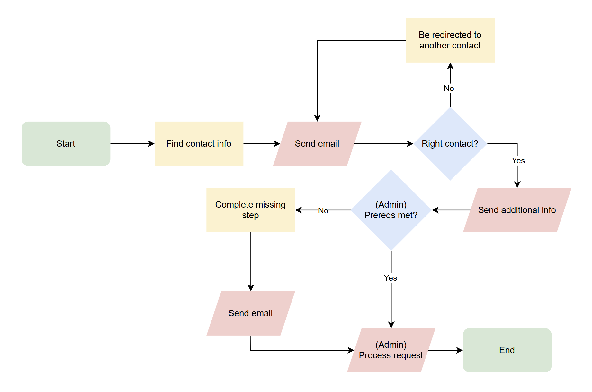
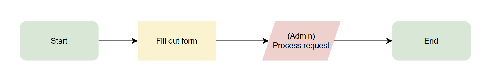
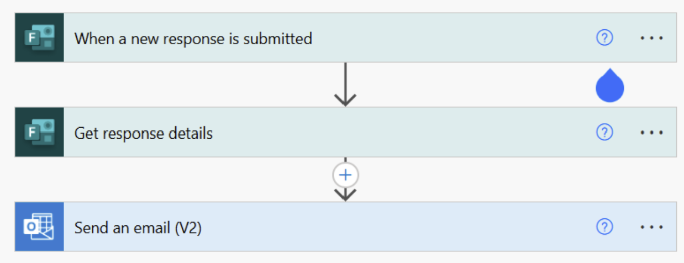

Request Automation System
Streamlining priority request handling through intelligent automation
Problem Statement
Note: This case study involves work on internal business processes. Information has been generalized to protect confidentiality, and all images are recreations that demonstrate the core concepts without revealing sensitive details.
Our team regularly received numerous emails from users requesting expedited processing of their documents. These requests typically lacked critical information, creating a time-consuming cycle of back-and-forth communication to gather necessary details. Once complete, we still needed to manually compile this information into a standardized format before forwarding it to the appropriate review teams. This inefficient process created delays, increased the risk of errors, and consumed valuable team resources.
Constraints
We needed to develop a solution that could be implemented quickly using existing tools and without requiring significant resources or system changes. The solution needed to be user-friendly for requesters while ensuring all necessary information was captured consistently. Additionally, it needed to integrate seamlessly with our existing workflow and communication channels.
Process
After analyzing our current workflow and identifying the key pain points, I determined that we needed a standardized intake process that would capture all required information upfront. By examining past expedite requests, I identified the essential data points needed for processing and the common reasons for follow-up questions.
I evaluated several potential solutions and determined that Microsoft Forms offered the ideal balance of accessibility, customization, and integration capabilities. To ensure the solution would address all stakeholder needs, I consulted with both our internal team and the review offices to understand their information requirements.
The key requirements identified for the new process included:
- Capturing complete document identification information
- Recording current document status
- Documenting justification for expedited processing
- Collecting relevant deadline information
- Automating information delivery to processing teams
Solution
I designed a comprehensive solution using Microsoft Forms and Power Automate to streamline the entire expedite request process from submission to delivery.
Standardized Request Form
The Microsoft Form I created was carefully structured to guide users through providing all necessary information. Each field included clear instructions and validation rules to ensure data quality. The form captured document identifiers, current status information, justification for expedited processing, and any relevant deadlines. This structured approach eliminated the need for follow-up questions in most cases.


Automated Workflow
Using Power Automate, I created a workflow that processed form submissions and delivered the information to our team's shared inbox in a standardized format. The automation extracted all form fields, formatted them into a consistent layout, and delivered them immediately upon submission. This eliminated manual data entry and ensured that all team members had access to the same information.

Results
The implementation of this automated solution has had a significant positive impact on our operations. To date, the form has been used over 800 times in just 18 months, demonstrating strong user adoption. When we receive email inquiries about expediting document reviews, we now simply direct users to the form, eliminating the need for lengthy email exchanges.
Time Savings
The new process saves approximately 2 hours per request for end users and 1 hour for administrative staff. With 800 requests processed, this represents over 2,400 labor hours saved across the organization.
Cost Efficiency
Based on average salary ranges ($90,000-$120,000 for requesters and $80,000 for administrative staff), the automated system has generated an estimated cost savings of $175,000-$215,000 over 18 months, or approximately $100,000-$120,000 annually.
Process Improvements
The consistent format of incoming information has improved communication with review teams and reduced processing errors. An unexpected benefit has been the ability to analyze the collected data, which has helped us identify patterns in request volume and better forecast busy periods.
Beyond the quantifiable benefits, the solution has improved user satisfaction by providing a clear, consistent process for expedite requests. The transparency and predictability of the new system have reduced frustration for both requesters and processing teams, creating a more positive experience for all stakeholders.